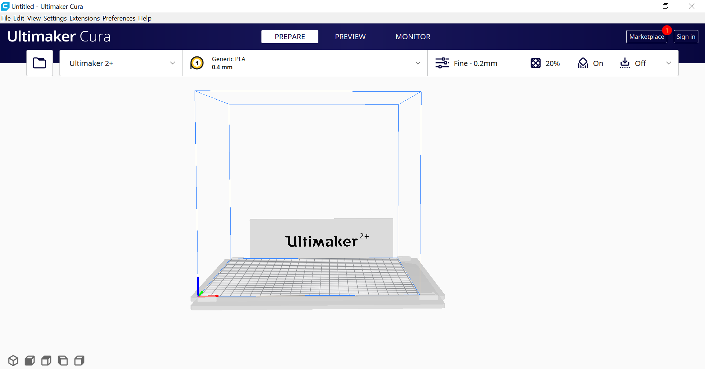
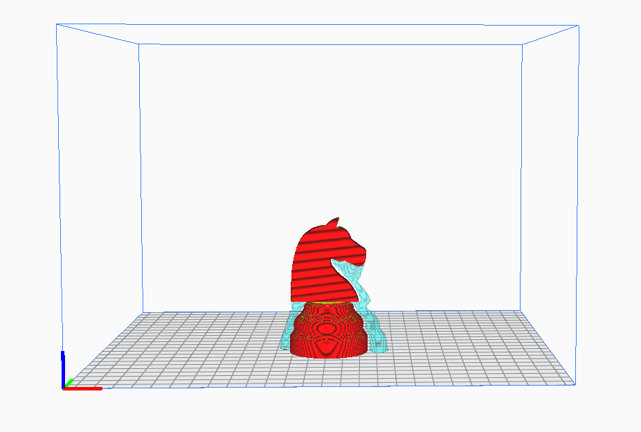
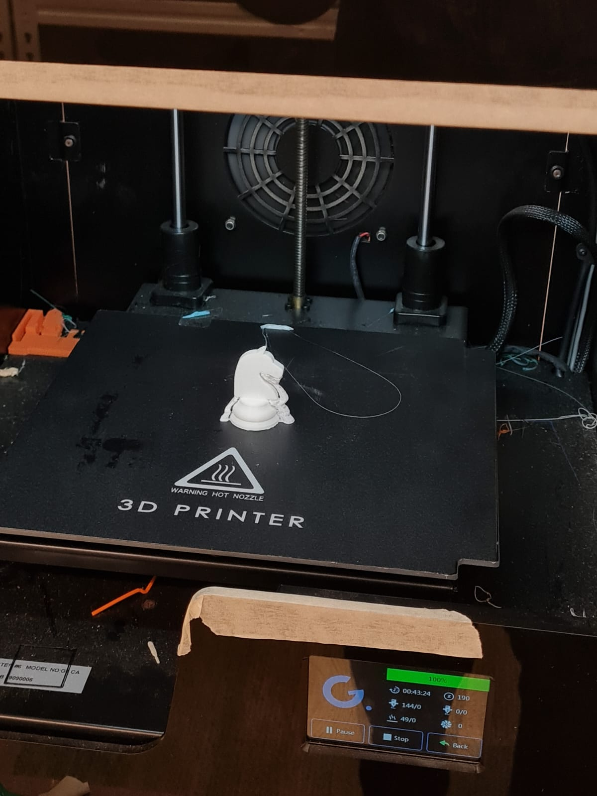
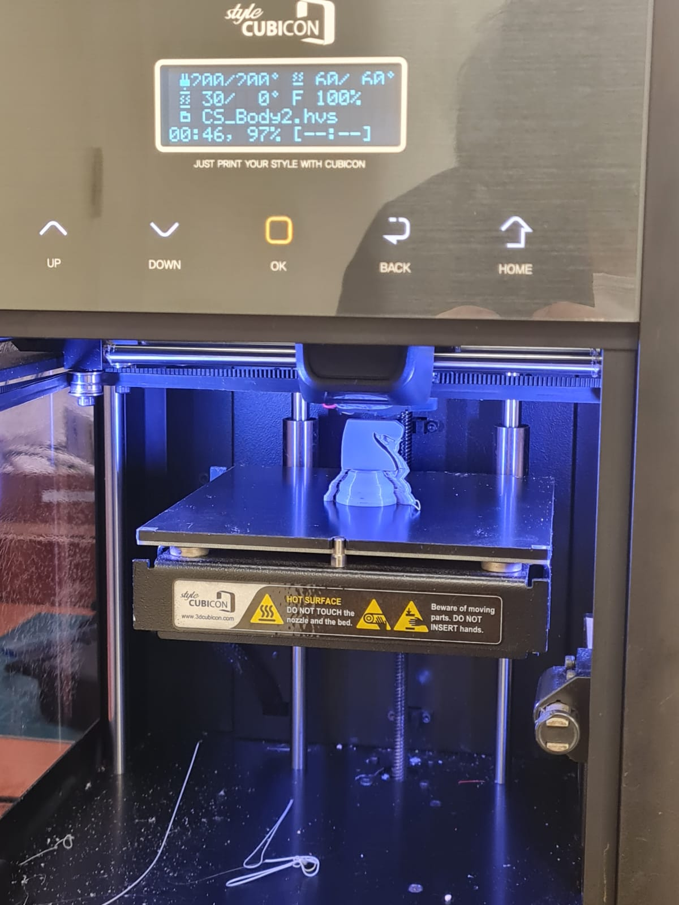
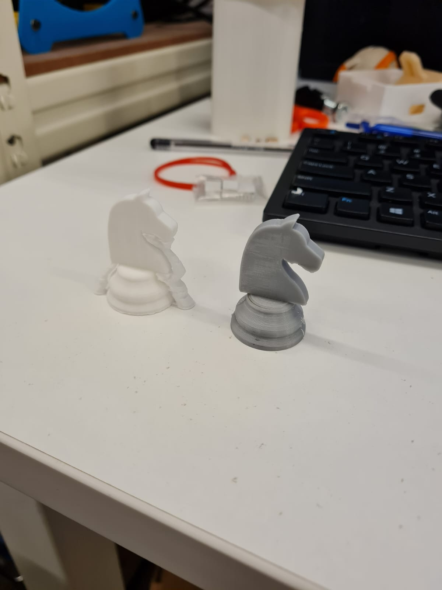

What is 3D printing ?
3D printing or additive manufacturing is a process of making three dimensional solid objects.3D printing is an additive process an object is created layer by layer of materials until the object is created.
On this page,I will show you what I have learn about 3D printing in my EP1000 class.
As a beginner in 3D printing, we are only able to change settings of our print in Cura slicer :
-Quality
-Infill
-Support
-Build Plate Adhesion
For Cura slicer, they only take files such as stl,obj and 3mf.
For my knight in cura slicer, my setting for it was infill 10% , using tree support and no build plate adhesion
why did put my infill like 10% and not 20% ? it is because I want my knight to print fast as higher infill will require longer time to print out.
I am printing my knight on a mbot printer
I am printing my knight on a cubicon style printer
The reason why i use tree support instead of using cura slicer support,it's because cura slicer support is very hard to remove and it will also cause damage to your print when removing out the support.
While tree support, it's very easy to remove and it prints out like a tree branch support.